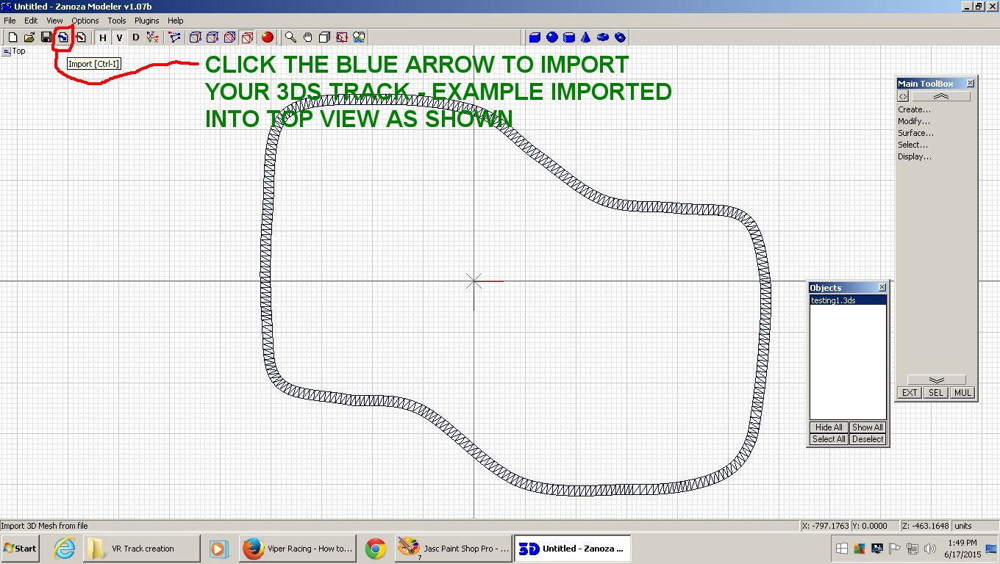
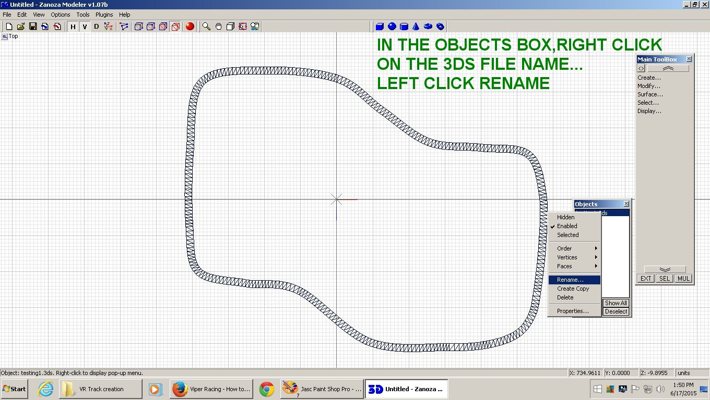
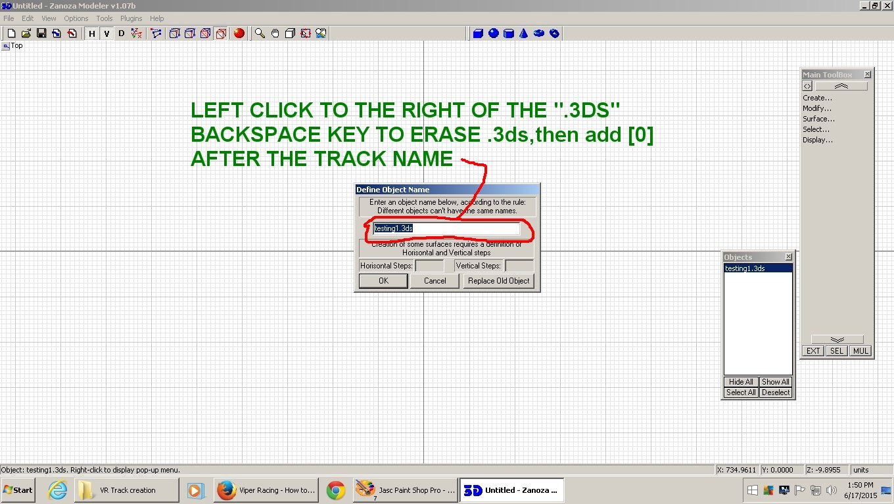
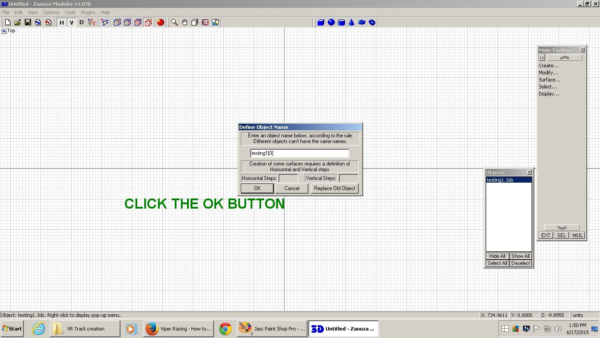
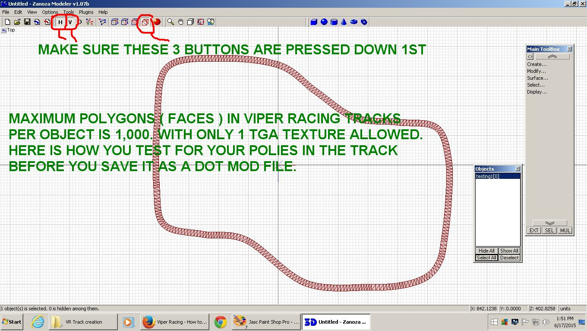
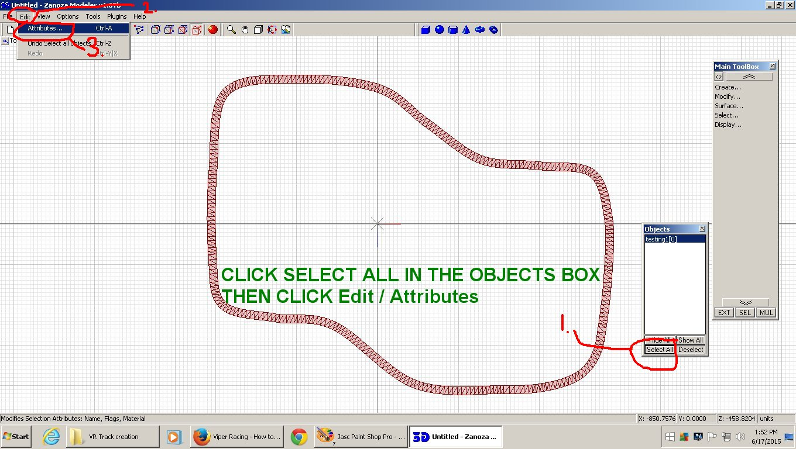
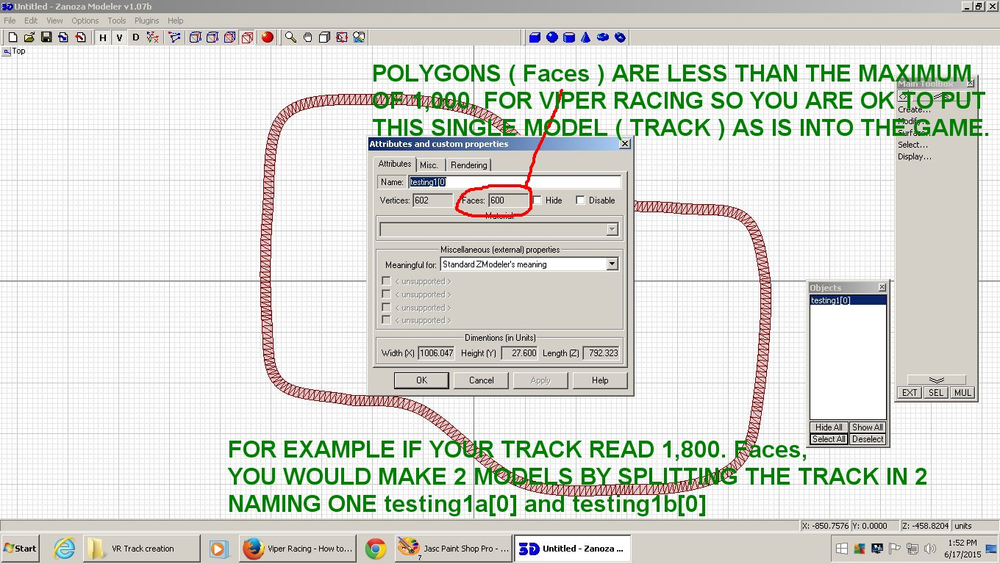
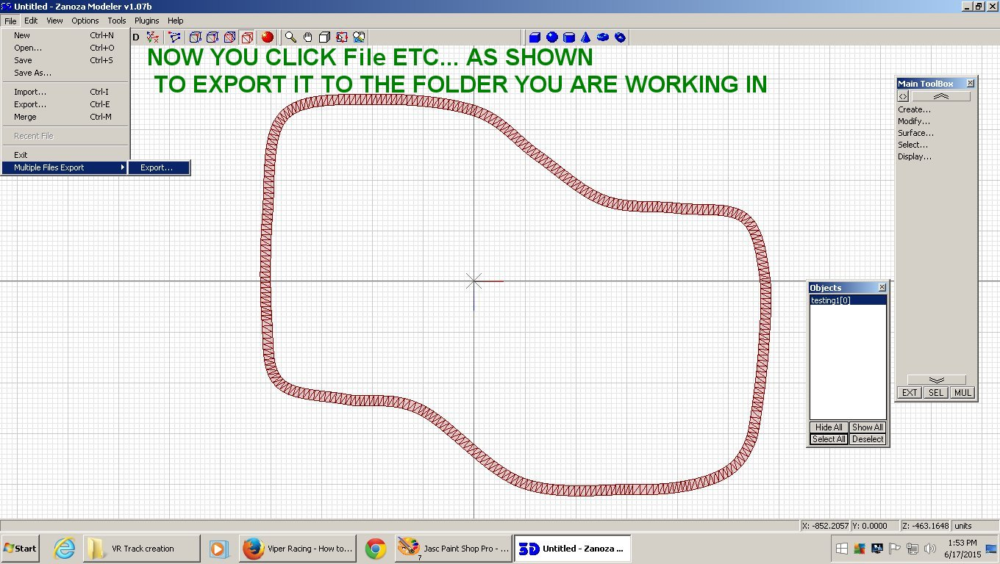
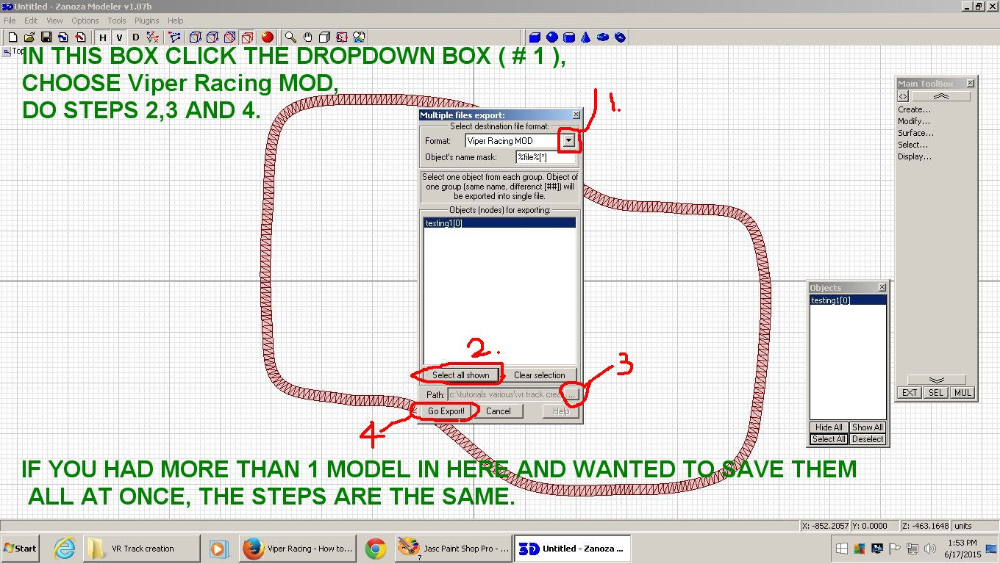
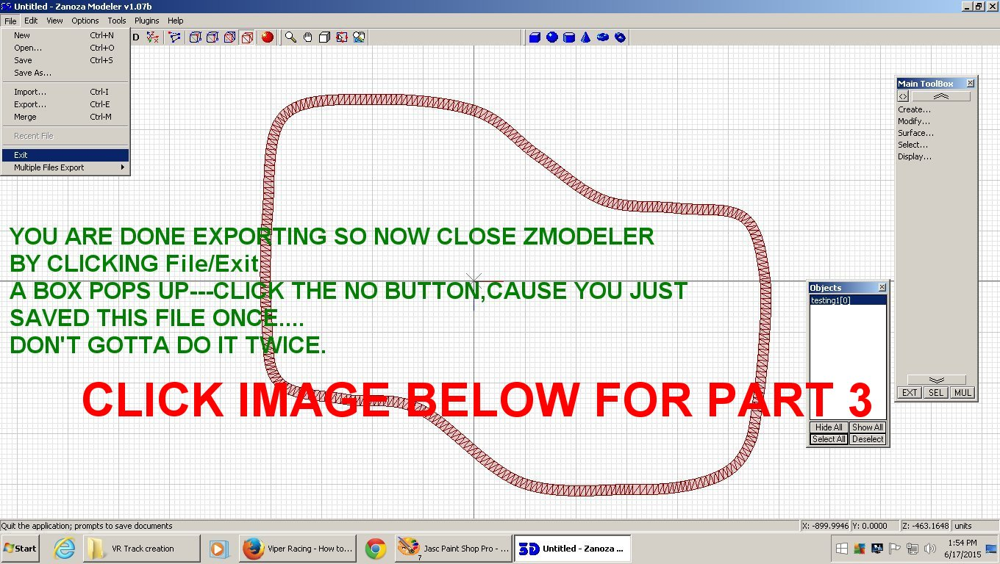

Viper Racing
How to put your new Track into Game Part 2
This is a second short tutorial by Val to explain the basics of getting a new track you just made into MGIs 1998 Viper Racing game.
The first tut covered making a "path" for your track in 3dsMax3.1.Links to all files required are there also.
vrtracktogametutpart1.html
If you have a track and path made already here is what you do next:
For this tut I will use the track shown below for a simple track example.
Start your Zmodeler version 1.07 and import your "trackname.3ds" track you made.

The following images will explain the steps in detail on how to get your track into Viper Racing.
Using Zmodeler 1.07 to convert to ".mod" format
Viper Racing game uses .mod ( filename.mod ) file format for all objects including surfaces.
To see larger view,Right click on pic/view image/Left click the + thingy.



The 3ds track must be imported into Zmodeler 1.07b and saved as a "yourtrackname[0]"
just as shown in the Zmod pic below:






